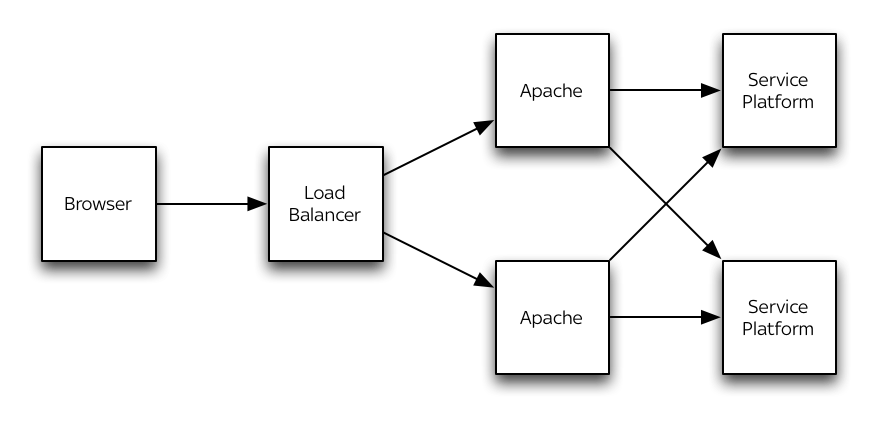
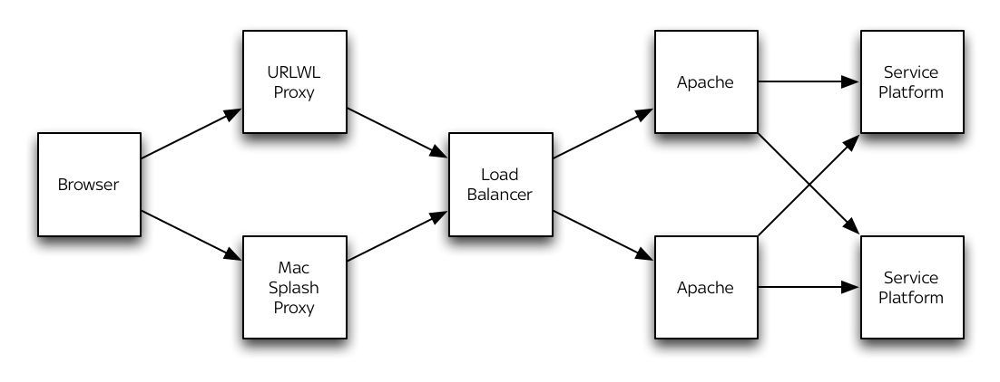

My objective is for you leave this room with enough knowledge about the service platform, so that you can apply logical reasoning to determine if there might be a fault with it and what that fault might be
What is it?
Many different things...
Web Site
Web Server
Application Server
How is it built?
With Java 7
The Language
The Virtual Machine
Garbage Collection
With Jetty
Web Server
Lightweight
Embedded
Well Documented
With Chef
Installs application
Configures application
Runs application
How does it run?
Chef Cookbook
Linux Service
Shell Script
Java
What does it talk to?
Databases – clouddb, myclouddb hsppdb
NAC – session management
Omniture – web analytics
SMS Gateway
Mail Server
Scenarios
Landing Page
Registration
Getting Online
What talks to it?
Apache
Monitoring
What does it look like?
The Website

The Redirection Service

Configuration
Application Configuration
Platform Configuration
Application Configuration
application.properties
jetty.xml
logback.xml
Platform Configuration
Stored in the database
configuration.*
shared.feature_configuration
Performance
Per server...
Max theoretical – 2400 requests per second
Web pages – 750 requests per second
Redirects – 500 requests per second
Registrations – 50 registrations per second
Monitoring & Logging
Nagios
Splunk
Log Files
JMX
Log Files
Standard Logs
GC Logs
Troubleshooting
“Oops! That one appears to have been lost in the Clouds.”
Questions?
Homework
Create a dashboard on Cacti for the service platform